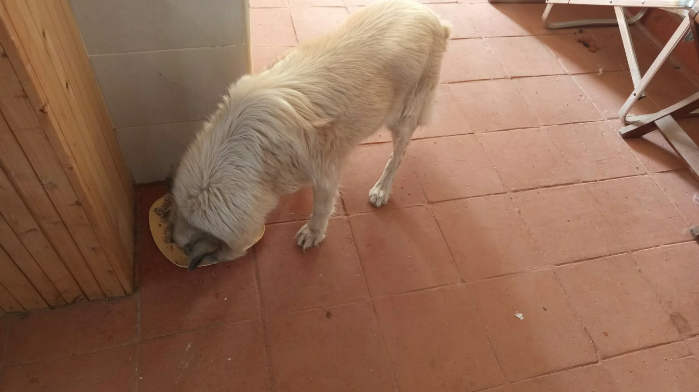

Mucheru World of Golf
Operations at Mucheru World of Golf on Tuesday, 20th October 2026 advanced key hydraulic, agronomic, and earthmoving milestones under the active on-site leadership of Mr. Gichuhi and Ken:
Golf Course Operational Highlights
A secondary branch of the perimeter water system was installed across the fairway with mechanical compression fittings and control valves to feed central greens, followed by immediate trench backfill by the women crew. Manual laborers shaped the primary drainage canal bed for continuous gravity flow. Ground crews graded and contoured 8 championship teeboxes per new instructions. Dam 2 liner heat welding advanced, Dam 3 securely held stored water, and temporary timber crossing bridges were erected.
- Cross-Course Secondary HDPE Irrigation Branch Installation: Ground crews excavated a cross-course trench through the fairway to lay a secondary HDPE branch line off the main perimeter network, securing direct water supply and balanced pressure to central greens and tees.
- Specialized Plumbing Connections & Branch Control Manifold: The site plumber completed precision mechanical connections at the boundary fence takeoff, installing HDPE saddle clamps, compression tees, union couplings, and ball control valves to regulate fairway flow.
- Trench Backfilling Operations by Women Crew: Trenching maintained organized sequencing: digging the cross-course trench, laying the black HDPE pipe, and the women ground crew immediately backfilling and leveling soil over the installed line.
- Main Collector Drainage Canal Bed Leveling for Gravity Flow: Manual personnel worked inside the primary drainage canal across the fairway, trimming high spots and grading the bed to ensure smooth gravity runoff toward the dam reservoir without water pooling.
- Extensive Teebox Grading & Surface Refinement (8 Teeboxes): Responding to updated technical instructions, ground crews carried out earthwork grading and red soil surface refinement across 8 teeboxes—Tees 1, 2, 3, 4, 5, 7, 9, and 10—contouring platforms to finished launch elevation.
- Dam 2 Polythene Floor Seam Heat Welding & Berm Works: Basin repair technicians used a hot air welding gun and pressure roller to thermal-weld black polythene floor liner seams, while perimeter teams tucked liner edges securely into the berm anchor trench.
- Dam 3 Stored Water Retention & Temporary Timber Bridges: Aerial drone inspection confirmed Dam 3 continues to hold stored water securely without leakage. In addition, round timber poles were wired into sturdy temporary bridges over deep open trenches for safe crew passage.
18-hole putting green status audit showing the latest work completed and current condition for each green as of October 20, 2026:
| Green | Current Technical & Agronomic State | Milestone Status |
|---|---|---|
| Green 1 | HDPE irrigation pipes laid and fitted inside perimeter sprinkler trenches (Oct 18). | Sprinkler Pipes Laid |
| Green 2 | HDPE irrigation pipes laid and fitted inside perimeter sprinkler trenches (Oct 18). | Sprinkler Pipes Laid |
| Green 3 | HDPE irrigation pipes laid and fitted inside perimeter sprinkler trenches (Oct 18). | Sprinkler Pipes Laid |
| Green 4 | Pop-up sprinkler and irrigation perimeter trenches dug along marked chalk line (Oct 14). | Sprinkler Trenches Complete |
| Green 5 | Ready. Fully established mature championship putting green turfgrass under active pop-up sprinkler irrigation conditioning. | Ready • Established Turf |
| Green 6 | Pop-up sprinkler trenches digging completed around green perimeter collar (Oct 15). | Sprinkler Trenches Complete |
| Green 7 | Drainage outlet trench connecting green 7 to main canal dug and leveled by manual crew (Oct 15). | Outlet Trench Dug • Leveled |
| Green 8 | Pop-up sprinkler trenches digging completed around green perimeter (Oct 15). | Sprinkler Trenches Complete |
| Green 9 | Orange drainage PVC pipe connected and outlet trench leveled leading to main canal (Oct 15). | PVC Connected • Trench Done |
| Green 10 | Pop-up sprinkler trenches digging completed around collar and surrounds (Oct 15). | Sprinkler Trenches Complete |
| Green 11 | Pop-up sprinkler trenches digging completed around green perimeter (Oct 15). | Sprinkler Trenches Complete |
| Green 12 | Pop-up sprinkler trenches digging completed around perimeter collar (Oct 15). | Sprinkler Trenches Complete |
| Green 13 | Pop-up sprinkler trenches digging completed along marked green perimeter (Oct 15). | Sprinkler Trenches Complete |
| Green 14 | Riversand application and surface leveling completed across the foundation (Oct 18). | Riversand Leveled |
| Green 15 | Pop-up sprinkler trenches digging completed around outer collar surrounds (Oct 15). | Sprinkler Trenches Complete |
| Green 16 | Pop-up sprinkler trenches digging completed around green perimeter collar (Oct 15). | Sprinkler Trenches Complete |
| Green 17 | Riversand application and surface leveling fully completed across foundation (Oct 19). | Riversand Leveled |
| Green 18 | Pop-up sprinkler trenches dug; riversand applied and leveled across green surface (Oct 14). | Riversand • Sprinkler Trench |
Comprehensive 18-hole championship teebox platform audit tracking earthwork leveling, structural embankments, and playing corridor alignments as of October 20, 2026:
| Teebox | Current Technical & Earthwork State | Platform Status |
|---|---|---|
| Tee 1 Today | Launch platform surface grading and leveling actively refined to design elevation per new instructions (Oct 20). | Refined & Graded |
| Tee 2 Today | Platform surface grading and earthwork leveling further refined per updated instructions (Oct 20). | Refined & Graded |
| Tee 3 Today | Playing launch platform contoured, leveled, and refined per new instructions given today (Oct 20). | Refined & Graded |
| Tee 4 Today | Championship launch platform surface graded, contoured, and refined per new instructions (Oct 20). | Refined & Graded |
| Tee 5 Today | Playing platform surface actively graded and refined with red soil per new instructions (Oct 20). | Grading & Refining |
| Tee 6 | Platform surface grading and contour refinement actively continued by ground crew (Oct 19). | Grading & Refining |
| Tee 7 Today | Both platforms actively graded, contoured, and refined with red soil per new instructions (Oct 20). | Refined & Graded |
| Tee 8 | Championship launch platform surface grading and contour refinement actively continued (Oct 19). | Grading & Refining |
| Tee 9 Today | Playing launch platform grading and contour refinement continued per new instructions (Oct 20). | Refinement in Progress |
| Tee 10 Today | Playing launch platform surface further refined and graded as per updated instructions (Oct 20). | Platform Refined |
| Tee 11 | Playing launch platform grading and contour refinement completely finished (Oct 13). | Refinement Complete |
| Tee 12 | Both championship and forward platforms actively shaped, leveled, and refined to finished design elevation (Oct 8). | Shaped & Refined |
| Tee 13 | Playing platform earthworks completely finished, shaped, and refined to final design elevation and contours (Oct 7). | Finished & Refined |
| Tee 14 | Launch platform earthworks completely finished, shaped, and refined to final playing contour (Oct 7). | Finished & Refined |
| Tee 15 | Launch platform shaping completely finished; terrace cut to design elevation and precision leveled (Oct 6). | Platform Reshaped |
| Tee 16 | Surplus red soil moved onto platform; launch terrace completely reshaped and leveled (Oct 5). | Platform Reshaped |
| Tee 17 | Launch platform reshaped, cleared of brush, and graded to playing corridor alignment (Oct 6). | Platform Reshaped |
| Tee 18 | Championship launch platform surface grading, red soil leveling, and refinement underway (Oct 16). | Grading & Refining |
Operations Agronomy & Engineering Synthesis
Course Irrigation & Drainage Milestones: Secondary HDPE branch line was installed across the fairway connecting to the perimeter water system with mechanical saddle fittings and ball valves to supply central greens; women crew backfilled the pipe trench; main drainage canal bed leveled for smooth gravity runoff; Dam 2 liner seam heat welding continues; Dam 3 successfully holds full stored water volume; temporary timber log bridges installed over open trenches.
Championship Teebox Platforms: 8 teeboxes (Tees 1, 2, 3, 4, 5, 7, 9, and 10) were actively graded, contoured, and refined to design elevation per new instructions; Tees 6, 8, 11, 12, 13, 14, 15, 16, 17, and 18 maintain established finished grades.
Field video documentation capturing Tuesday, 20th October 2026 operations at Mucheru World of Golf: excavation and placement of the HDPE branch pipeline cutting across the fairway to feed central greens, specialized plumbing connections with compression tees and control valves, women crew backfilling the pipe trench, manual bed leveling along the main gravity drainage canal, extensive grading and surface contouring on Teeboxes 1, 2, 3, 4, 5, 7, 9, and 10 per updated instructions, Dam 2 liner heat-welding repairs, and Dam 3 water retention.
Sequential photographic field documentation capturing cross-course irrigation piping, manifold plumbing, trench backfilling, canal bed leveling, teebox grading, and dam infrastructure at Mucheru World of Golf:

Perimeter Pipeline Branch Manifold Connection
Mechanical compression tees, blue union couplings, and orange ball control valves installed where the secondary irrigation line branches from the perimeter pipeline across the fairway.

Cross-Course Secondary HDPE Line Laid in Trench
Continuous black HDPE pipe laid along the excavated trench passing over an underlying orange PVC drainage crossing on the golf course fairway.

Plumber Installing HDPE Pipe Branch Saddle
Site plumber in rubber boots inside the trench tightening mechanical compression bolts on an HDPE pipe branch saddle with a socket wrench and power drill on hand.

Mechanical Coupling & Trench Backfill
Bolted black HDPE pipe union fitting inspected inside the trench as manual backfilling begins across the fairway turf.

Aerial View of Main Drainage Trench Leveling
High-angle drone overview of the winding main drainage trench cutting across the course toward the dam, with manual workers leveling the channel bed for smooth gravity flow.

Timber Pole Temporary Trench Crossing Bridge
Treated round wooden poles wired together and positioned across the deep excavated drainage trench to provide safe crossing for personnel and equipment.

Dam 2 Geomembrane Floor Seam Heat Welding
Two specialized technicians using a hot air heat-welding gun and pressure roller to seal overlapping black polythene liner seams on the basin floor of Dam 2.

Dam 2 Floor Liner Repair Operations
Wide perspective of Dam 2 basin showing the installed polythene liner, portable power generator, and technicians sealing seams along the central floor.

Drone Perspective of Dam 2 Liner & Berm Works
Aerial drone photograph showing technicians repairing liner seams in the basin floor while the women crew works along the perimeter berm tucking the polythene liner into the anchor trench.

Aerial Overview of Dam 2 Center Island Basin
High-altitude drone photograph displaying the full footprint of Dam 2 lined with black geomembrane around the central preserved tree island with ongoing repair activity.

Aerial View of Dam 3 Holding Stored Water
Drone view of Dam 3 successfully retaining stored water with backfilled anchor trenches along the embankment and surrounding course terrain.

Aerial View of Refined Teebox 3 Platform
Drone photograph capturing the contoured, graded, and leveled earthen platform of Teebox 3 bordered by trees, with a fresh stockpile of red volcanic soil staged adjacent.

Aerial Perspective of Teebox 4 Platform
Overhead drone view of Teebox 4 launch terrace precision-graded to rectangular design elevation with a red soil stockpile and drainage slit, overlooking Dam 3 in the distance.

Aerial View of Ground Crew Grading Teebox 7
Drone photograph showing the manual ground crew with wheelbarrows and tools actively shaping and grading the Teebox 7 platform adjoining the stone boundary wall and access road.

Manual Ground Crew Leveling Teebox 7
Ground personnel using hoes, rakes, and wheelbarrows spreading red soil and leveling the elevated playing platform of Teebox 7 under the shade of trees.

Teebox 7 Terrace Shaping & Elevation Grading
Wide ground-level shot of workers shaping the raised red soil terrace of Teebox 7, aligning platform contours to updated technical specifications.
Chaka Farms
Daily agricultural and operational activities at Chaka Farms on Tuesday, 20th October 2026 registered full quantitative milk yield reconciliation, livestock census recording, canine behavior conditioning, dip structural repairs, material haulage, and estate grounds maintenance under coordinated team oversight:
Farm Operational Highlights
Dairy production achieved a gross harvest of 9.0 Litres (6.0L morning + 3.0L evening), with 8.0 Litres dispatched for commercial sales and 1.0 Litre distributed for routine internal farm allocations (0.5L Gladys staff ration + 0.5L Maasai), achieving 100% accounting reconciliation strictly in Litres with zero discrepancy. Updated livestock census confirmed a total flock count of 102 goats and sheep following the passing of a previously monitored sickly goat kid on 16th October. Willy conducted morning canine socialization with Coby, Zara, and Bella, followed by pasture walking, exercise routines, kennel cleaning, paw command drills, and kennel manners conditioning. Ken oversaw structural repairs on the livestock dip, erecting vertical treated timber poles. Kinoti hauled HDPE pipes and posts to the golf course, and Margaret and Monica weeded the pond island embankment.
- 100% Reconciled Dairy Harvest (9.0 Litres): Kamandau logged 9.0 Litres gross milk yield across daily milking (6.0L morning + 3.0L evening). Commercial sales totaled 8.0 Litres (5.0L morning + 3.0L evening). Internal farm allocations accounted for 1.0 Litre (0.5L Gladys + 0.5L Maasai), achieving 100% accounting reconciliation strictly in Litres with zero variance.
- Livestock Flock Census & Kid Mortality Record: An official census update confirmed the total herd count of goats and sheep stands at 102 head. The sickly goat kid previously monitored in isolation succumbed on 16th October, bringing the flock total from 106 to 102 following 4 deceased animals. The remaining herd is active and healthy.
- Canine Socialization, Pasture Exercise & Kennel Manners: Willy executed comprehensive canine management routines, including morning socialization for Coby, Zara, and Bella, off-leash pasture exercise, kennel sanitation, paw command practice, and kennel manners conditioning.
- Goat Dip Structural Pole Installation & Sockets: Under Ken's supervision, the team advanced structural rehabilitation of the plunge dip facility, excavating ground sockets and erecting vertical treated timber poles to reinforce the livestock handling crush frame, with roof works remaining.
- Tractor Haulage Logistics & Island Maintenance: Kinoti operated the red farm tractor (`ZJ 5334`) hauling coils of black HDPE piping and timber posts to the golf course. Meanwhile, Margaret and Monica weeded along the pond island embankment and maintained compound cleanliness.
Official quantitative dairy milking harvest and sales ledger for Tuesday, 20th October 2026, recording gross yields, commercial dispatches, and internal farm disbursements strictly in Litres:
| Category / Transaction | Morning Session | Evening Session | Daily Total |
|---|---|---|---|
| Gross Milk Harvested | 6.0 Litres | 3.0 Litres | 9.0 Litres |
| Commercial Milk Sales (Dispatched) | 5.0 Litres | 3.0 Litres | 8.0 Litres |
| Internal Farm Allocation — Gladys (Staff) | 0.5 Litres | — | 0.5 Litres |
| Internal Farm Allocation — Maasai | 0.5 Litres | — | 0.5 Litres |
| Internal Farm Allocation — Goat Kids (Weaned) | 0.0 Litres | 0.0 Litres | 0.0 Litres |
| Total Volume Accounted For | 6.0 Litres | 3.0 Litres | 9.0 Litres (100% Reconciled) |
Dairy Accounting & Livestock Census Reconciliation Note
Total gross milk harvested of 9.0 Litres is fully accounted for by 8.0 Litres sold commercially (5.0L morning + 3.0L evening) and 1.0 Litre in routine farm allocations (0.5L Gladys + 0.5L Maasai). In accordance with reporting rules, milk volumes are recorded strictly in Litres, and Maasai is designated strictly as Maasai. In the livestock division, a sickly goat kid passed away on 16th October, bringing the total goat and sheep flock count from 106 to 102 (4 total deceased). All remaining animals are accounted for and in good condition.
Field video documentation capturing Tuesday, 20th October 2026 canine unit operations under Willy: morning socialization sessions conducted with Coby, Zara, and Bella, followed by structured off-leash walking, exercise routines across the farm fields, kennel sanitation, paw command practice, and kennel manners conditioning.
Photographic field documentation capturing material haulage, goat dip structural pole installation, and grounds maintenance across Chaka Farms:

Tractor-Trailer Hauling HDPE Pipes & Posts
Farm tractor trailer (ZJ 5334) loaded with large coils of black HDPE irrigation piping and wooden posts being secured for transport from the greenhouse to the golf course.

Excavating Support Holes for Goat Dip Crush
Worker in green overalls using a digging bar and shovel to excavate deep post holes in the soil for structural uprights at the Chaka Farms goat dip facility.

Setting Structural Timber Poles at Goat Dip
Two farm workers positioning and plumbing vertical treated timber posts into ground sockets along the wooden livestock handling crush at the goat dip.

Island Embankment Weeding & Grounds Maintenance
Margaret and Monica clearing weeds and trimming grass along the pond island embankment near the tall reed beds, gathering yard waste into a collection bag.
Kabete Residence
Operations and daily updates at Kabete Residence on Tuesday, 20th October 2026 were overseen and shared by Njoki, covering structural formwork propping at the staff quarters (SQ) fireplace, high-pressure water curing of the forest river retaining wall, hillside drainage excavation and tunneling, snake discovery and safe removal, and attentive domestic pet care:
Estate Maintenance, Fireplace SQ Formwork & Grounds Highlights
At the outdoor fireplace construction site, carpenters erected and reinforced dense vertical and diagonal timber support props beneath the marine plywood falsework ceiling for the SQ base slab. Down in the riverine forest area, site personnel conducted active water curing on the newly cast concrete retaining wall, applying high-pressure water streams along the structure. On the steep hillside behind the SQ wall, laborers excavated a deep drainage channel and subterranean tunnel to divert stormwater runoff away from building foundations. During excavation of the drainage tunnel, a snake was uncovered in the soil and safely neutralized and killed by site personnel. Domestic pets—Ajabu the Golden Retriever, and resident cats Aiko and Reo—received their scheduled feedings and attentive care on the veranda (Mocha monitored).
- Reinforcement of Shutter Formwork Base Slab at SQ Fireplace: Carpenters and builders erected and wedged a dense grid of vertical and angled round timber props beneath the film-faced plywood decking, reinforcing the falsework frame for the concrete base slab ceiling at the SQ fireplace extension.
- Pressurized Water Jet Curing of River Retaining Wall: Site personnel operated high-pressure water jet lines to thoroughly cure the newly cast reinforced concrete retaining wall situated in the forest riverine area, keeping the concrete matrix saturated to achieve design structural strength.
- Drainage Trench & Tunnel Excavation Behind SQ Wall: Laborers in high-visibility gear and gumboots excavated a deep drainage channel and subterranean tunnel through the red clay soil on the steep embankment behind the SQ wall to manage stormwater runoff.
- Worksite Safety Encounter — Snake Discovered & Neutralized: While excavating the subterranean drainage tunnel behind the SQ wall, workers uncovered a small dark snake in the loose soil. The team acted promptly to neutralize and kill the snake, ensuring safety across the worksite before resuming excavation.
- Domestic Pet Care & Nutrition: Resident domestic pets received dedicated care on the veranda. Ajabu the Golden Retriever enjoyed his daily ration from his dish, and resident cats Aiko and Reo were fed meals side by side, while Mocha remains tracked and searched for.
Photographic field documentation capturing SQ fireplace falsework propping, river retaining wall concrete water curing, hillside drainage tunneling, snake neutralization, and domestic pet care at Kabete Residence:

Timber Falsework Propping for SQ Fireplace Slab
Dense network of vertical timber support props erected and wedged firmly beneath the marine plywood ceiling formwork for the SQ fireplace base slab.

Diagonal Bracing of SQ Fireplace Shuttering
Construction worker in safety vest adjusting vertical and angled timber struts reinforcing the elevated formwork deck at the stone-walled SQ fireplace structure.

Exterior View of Timber Propping at SQ Fireplace
Structural timber props supporting the timber runners and plywood formwork adjacent to the stone masonry wall at the SQ fireplace extension.

Water Jet Curing of River Retaining Wall
High-pressure water jet spraying across the crest and face of the newly cast concrete retaining wall down in the riverine forest area to ensure proper moisture curing.

Forest Retaining Wall Concrete Hydration
Full-length perspective of the reinforced concrete river retaining wall being thoroughly saturated with a pressurized water stream amidst dense forest vegetation.

Excavating Drainage Trench Behind SQ Wall
Site worker in high-visibility vest and gumboots excavating the drainage channel behind the SQ retaining wall, managing irrigation hose lines in the trench.

Slope Excavation for Hillside SQ Drainage Tunnel
Worker cutting through red clay soil on the steep embankment behind the SQ wall to form the subterranean drainage channel diversion.

Snake Uncovered During Drainage Tunnel Excavation
Small dark snake discovered in the loose red soil during manual excavation of the drainage tunnel behind the SQ wall.

Neutralized Snake Following Excavation Encounter
Detailed view of the snake after being safely neutralized by site personnel following its emergence from the excavation trench.

Ajabu the Golden Retriever Feeding on Veranda
Ajabu the Golden Retriever eating his daily meal from a bowl on the tiled residential veranda at Kabete Residence.

Resident Cats Aiko & Reo Feeding on Veranda
Resident cats Aiko (calico) and Reo (tabby and white) eating together from metal food bowls on the veranda tiles, with Mocha still missing and under search.